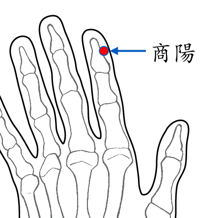

【穴位名稱】: 商陽 (LI1)

【治療症狀】: 腹瀉 蕁麻疹 青春痘 濕疹 手指化膿 腳趾化膿 淋巴腺炎 喉嚨痛 喉嚨異物感 扁桃腺炎 腮腺炎 扁桃腺炎 發燒
【取穴位置】: 食指末節橈側，距指甲角1分處。《靈樞·本輸》：「大指次指之端也」；《針灸甲乙經》：「在手大指次指內側，去爪甲如韭葉。」《針灸集成》：「與第一節橫紋頭相直」；即食指指甲廓橈側角後旁1分凹陷處。
【針刺方法】: 淺刺0.1～0.2吋或點刺出血。
回前頁